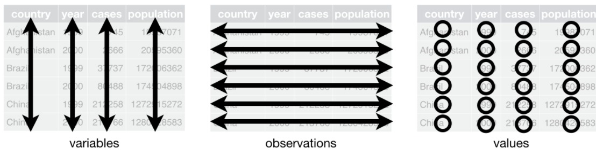
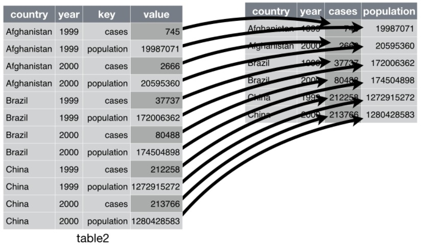
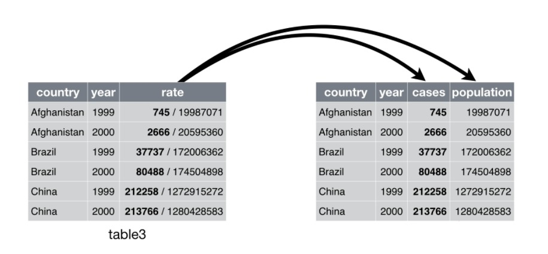

library(tidyverse)
library(here)TidyR 2019
Bibiografia da Aula Livro R4DS Wickham e Grolemund 2016 Tidy explain Garrick Aden-Buie cap 12 github disponível em https://github.com/gadenbuie/tidyexplain Locke Stephanie Working with R (fundamentals book 2 cap 8) em prelo
TidyR
Nesse capítulo vamos focar no tidyr, um pacote com ferramentas que ajudam a arrumar a base de dados desorganizada, e pertence ao núcleo do tidyverse.
Os dados subjacentes podem estar dispostos de várias maneiras. Cada conjunto de dados mostra os mesmos valores de quatro variáveis: país, ano, população e casos, mas cada conjunto de dados organiza os valores de uma maneira diferente.
table1# A tibble: 6 × 4
country year cases population
<chr> <dbl> <dbl> <dbl>
1 Afghanistan 1999 745 19987071
2 Afghanistan 2000 2666 20595360
3 Brazil 1999 37737 172006362
4 Brazil 2000 80488 174504898
5 China 1999 212258 1272915272
6 China 2000 213766 1280428583table2# A tibble: 12 × 4
country year type count
<chr> <dbl> <chr> <dbl>
1 Afghanistan 1999 cases 745
2 Afghanistan 1999 population 19987071
3 Afghanistan 2000 cases 2666
4 Afghanistan 2000 population 20595360
5 Brazil 1999 cases 37737
6 Brazil 1999 population 172006362
7 Brazil 2000 cases 80488
8 Brazil 2000 population 174504898
9 China 1999 cases 212258
10 China 1999 population 1272915272
11 China 2000 cases 213766
12 China 2000 population 1280428583table3# A tibble: 6 × 3
country year rate
<chr> <dbl> <chr>
1 Afghanistan 1999 745/19987071
2 Afghanistan 2000 2666/20595360
3 Brazil 1999 37737/172006362
4 Brazil 2000 80488/174504898
5 China 1999 212258/1272915272
6 China 2000 213766/1280428583# Spread across two tibbles
table4a # cases# A tibble: 3 × 3
country `1999` `2000`
<chr> <dbl> <dbl>
1 Afghanistan 745 2666
2 Brazil 37737 80488
3 China 212258 213766table4b # population# A tibble: 3 × 3
country `1999` `2000`
<chr> <dbl> <dbl>
1 Afghanistan 19987071 20595360
2 Brazil 172006362 174504898
3 China 1272915272 1280428583Todas essas são representações dos mesmos dados, mas não são igualmente fáceis de usar. Um conjunto de dados arrumado será muito mais fácil de se trabalhar.
Existem três regras inter-relacionadas que tornam um conjunto de dados organizado, ou simplesmente tidy:
1.Cada variável deve ter sua própria coluna.
2.Cada observação deve ter sua própria linha.
3.Cada valor deve ter sua própria célula.
Essas três regras estão inter-relacionadas porque é impossível satisfazer apenas duas das três.
Essa inter-relação leva a um conjunto ainda mais simples de instruções práticas:
1.Coloque cada conjunto de dados em um tibble.
2.Coloque cada variável em uma coluna.

Neste exemplo, apenas table1 é tidy (organizado). É a única representação em que cada coluna é uma variável.
Por que garantir que seus dados estejam tidy? Existem duas vantagens principais:
1.Há uma vantagem geral em escolher uma maneira consistente de armazenar dados. Se você tiver uma estrutura de dados consistente, será mais fácil aprender as ferramentas que funcionam com ela, pois elas têm uma uniformidade subjacente.
2.Há uma vantagem específica em colocar variáveis em colunas porque permite que a natureza vetorizada do R brilhe. Como você aprendeu quando estudamos o pacote dplyr, para manipulação e resumo, a maioria das funções R internas trabalha com vetores de valores. Isso faz com que transformar dados organizados na forma tidy pareça particularmente natural.
O dplyr, ggplot2 e todos os outros pacotes no tidyverse são projetados para trabalhar com dados organizados. Aqui estão alguns pequenos exemplos mostrando como você pode trabalhar com table1.
# Compute rate per 10,000
table1 %>%
mutate(rate = cases / population * 10000)# A tibble: 6 × 5
country year cases population rate
<chr> <dbl> <dbl> <dbl> <dbl>
1 Afghanistan 1999 745 19987071 0.373
2 Afghanistan 2000 2666 20595360 1.29
3 Brazil 1999 37737 172006362 2.19
4 Brazil 2000 80488 174504898 4.61
5 China 1999 212258 1272915272 1.67
6 China 2000 213766 1280428583 1.67 # Compute cases per year
table1 %>%
count(year, wt = cases)# A tibble: 2 × 2
year n
<dbl> <dbl>
1 1999 250740
2 2000 296920# Visualise as mudanças no tempo
library(ggplot2)
ggplot(table1, aes(year, cases)) +
geom_line(aes(group = country), colour = "grey50") +
geom_point(aes(colour = country))
###Exercícios 1. como as variáveis e observações são usadas em cada uma das tabelas de amostra.
2.Calcule a razão para table2 e table4a + table4b. Você precisará realizar quatro operações:
3.Extraia o número de casos de tuberculose (cases) por país por ano. Extraia a população correspondente por país por ano. Divida os casos por população e multiplique por 10000. Guarde de volta no local apropriado. Com qual representação é mais fácil trabalhar? Qual é o mais difícil? Por quê?
4.Recrie o gráfico mostrando a mudança nos casos ao longo do tempo usando table2 em vez de table1. O que você precisa fazer primeiro?
##Espalhando e Coletando Os princípios de dados organizados (tidy) parecem tão óbvios que você pode se perguntar se algum dia encontrará um conjunto de dados que não esteja organizado. Infelizmente, no entanto, a maioria dos dados que você encontrará será desordenada. Há duas razões principais:
A maioria das pessoas não está familiarizada com os princípios de dados organizados e é difícil derivá-los, a menos que você gaste muito tempo trabalhando com dados.
Os dados geralmente são organizados para facilitar algum uso além da análise. Por exemplo, os dados geralmente são organizados para facilitar o input.
Isso significa que, para a maioria das análises reais, você precisa arrumar as coisas. O primeiro passo é sempre descobrir quais são as variáveis e as observações. Às vezes isso é fácil; outras vezes, você precisará consultar as pessoas que originalmente geraram os dados. O segundo passo é resolver um dos dois problemas comuns:
Uma variável pode estar espalhada em várias colunas.
Uma observação pode estar espalhada em várias linhas.
Normalmente, um conjunto de dados sofrerá apenas um desses problemas; só vai sofrer de ambos, se você for realmente azarado! Para corrigir esses problemas, você precisará das duas funções mais importantes do Tidyr: pivot_longer ( ) e pivot_wider ( ).
###Pivot Longer Um problema comum é um conjunto de dados em que alguns dos nomes das colunas não são nomes de variáveis, mas valores de uma variável. Como table4a: os nomes das colunas 1999 e 2000 representam valores da variável year, e cada linha representa duas observações, não uma.
table4a# A tibble: 3 × 3
country `1999` `2000`
<chr> <dbl> <dbl>
1 Afghanistan 745 2666
2 Brazil 37737 80488
3 China 212258 213766Para arrumar um conjunto de dados como este, precisamos reunir essas colunas em um novo par de variáveis. Para descrever essa operação, precisamos de três parâmetros:
O conjunto de colunas que representam valores, não variáveis. Neste exemplo, essas são as colunas 1999 e 2000.
O nome da variável cujos valores formam os nomes das colunas. Chamam isso de chave, e aqui é ano.
O nome da variável cujos valores estão espalhados pelas células. Eu chamo esse valor e aqui está o número de casos.
Juntos, esses parâmetros geram a chamada para pivot_longer():
table4a %>%
pivot_longer(c('1999', '2000'), names_to = "year", values_to = "cases")# A tibble: 6 × 3
country year cases
<chr> <chr> <dbl>
1 Afghanistan 1999 745
2 Afghanistan 2000 2666
3 Brazil 1999 37737
4 Brazil 2000 80488
5 China 1999 212258
6 China 2000 213766As colunas a serem reunidas são especificadas com a notação de estilo dplyr::select( ). Aqui há apenas duas colunas, então as listamos individualmente. Note que “1999” e “2000” são nomes não sintáticos (porque eles não começam com uma letra), então temos que cercá-los em backticks.

No resultado final, as colunas reunidas são descartadas e obtemos novas colunas de chave e valor. Caso contrário, os relacionamentos entre as variáveis originais serão preservados. Visualmente, isso é mostrado na Figura 12.2. Podemos usar o pivot_longer() para arrumar a table4b de maneira similar. A única diferença é a variável armazenada nos valores da célula:
table4b %>%
pivot_longer(c('1999', '2000'), names_to = "year", values_to = "population")# A tibble: 6 × 3
country year population
<chr> <chr> <dbl>
1 Afghanistan 1999 19987071
2 Afghanistan 2000 20595360
3 Brazil 1999 172006362
4 Brazil 2000 174504898
5 China 1999 1272915272
6 China 2000 1280428583tidy4a <-table4a %>%
pivot_longer(c('1999', '2000'), names_to = "year", values_to = "cases")
tidy4b <- table4b %>%
pivot_longer(c('1999', '2000'), names_to = "year", values_to = "population")
left_join(tidy4a, tidy4b)Joining with `by = join_by(country, year)`# A tibble: 6 × 4
country year cases population
<chr> <chr> <dbl> <dbl>
1 Afghanistan 1999 745 19987071
2 Afghanistan 2000 2666 20595360
3 Brazil 1999 37737 172006362
4 Brazil 2000 80488 174504898
5 China 1999 212258 1272915272
6 China 2000 213766 1280428583####Pivot wider
Wider (mais largo) faz o movimento inverso do pivô longo. Utiliza-se quando uma observação encontra-se em mais de uma linha. Por exemplo, observe a table2: A obdervação de um país num ano está acomodada em duas linhas.
table2# A tibble: 12 × 4
country year type count
<chr> <dbl> <chr> <dbl>
1 Afghanistan 1999 cases 745
2 Afghanistan 1999 population 19987071
3 Afghanistan 2000 cases 2666
4 Afghanistan 2000 population 20595360
5 Brazil 1999 cases 37737
6 Brazil 1999 population 172006362
7 Brazil 2000 cases 80488
8 Brazil 2000 population 174504898
9 China 1999 cases 212258
10 China 1999 population 1272915272
11 China 2000 cases 213766
12 China 2000 population 1280428583Para organizar este conjunto de dados, primeiro analisaremos a sua representação de forma similar que fizemos com pivot_longer(). Contudo, agora precisaremos apenas de dois parâmetros:
A coluna que contám o nome das variáveis A coluna será a chave, neste caso denominada “type”.
A coluna que contém os valores das múltiplas variáveis, ali denominada “count”.
Uma vez que isso entendido, pode-se utilizar pivot_wider(), Como mostrado programaticamente e visualmente na figura abaixo.

table2 %>%
pivot_wider(names_from = type, values_from = count)# A tibble: 6 × 4
country year cases population
<chr> <dbl> <dbl> <dbl>
1 Afghanistan 1999 745 19987071
2 Afghanistan 2000 2666 20595360
3 Brazil 1999 37737 172006362
4 Brazil 2000 80488 174504898
5 China 1999 212258 1272915272
6 China 2000 213766 1280428583Como você já deve ter verificado as funções pivot_longer() e pivot_wider() são complementares. pivot_longer() transforma tabelas largas em estreitas e mais compridas enquanto que pivot_wider() transforma tabelas longas e estreitas em mais largas e curtas.
Exercícios
1.Porque pivot_longer() e pivot_wider() não são perfeitamente simétricas? Considere cudadosamente o seguinte exemplo: {r, eval= FALSE, include=TRUE} stocks <- tibble( year = c(2015, 2015, 2016, 2016), half = c( 1, 2, 1, 2), return = c(1.88, 0.59, 0.92, 0.17) ) stocks %>% pivot_wider(names_from = year, values_from = return) %>% pivot_longer(2015:2016, names_to = “year”, values_to = “return”)
(Dica: Olhe para os tipos de variáveis e pense sobre o nome das colunas.)
pivot_longer() tem um argumento chamado names_ptype , exemplo: names_ptype = list(year = double()). O que ele faz?
- Porque este código falha?
table4a %>% pivot_longer(c(1999, 2000), names_to = “year”, values_to = “cases”)
3.O que aconteceria ao usar a função pivot_wider na tabela abaixo? Como poderia consertar incluindo uma coluna?
- Organize o tibble abaixo. Você precisará utilizar pivot_longer() ou pivot_wider()? Quais são as variáveis?
Separando e unindo
Até aqui você aprendeu como organizar a table2 table2 e a table4, mas não a table3. table3 apresenta um probema diferente: uma coluna (rate) contém duas variáveis (cases and population). Para corrigir este problema, precisaremos da função separate().
Você também aprenderá sobre a função complementar de separate(): unite(), que você utilizará quando uma variável estiver espalhada em multiplas colunas.
Separate
separate( ) Divide uma coluna em multiplas colunas, separando-as a partir do aparecimento de um caracter. Tome a table3:
table3# A tibble: 6 × 3
country year rate
<chr> <dbl> <chr>
1 Afghanistan 1999 745/19987071
2 Afghanistan 2000 2666/20595360
3 Brazil 1999 37737/172006362
4 Brazil 2000 80488/174504898
5 China 1999 212258/1272915272
6 China 2000 213766/1280428583A coluna “rate” contém duas variáveis: cases e population, e precisaremos dividi-la em duas variáveis. separate() toma o nome da coluna a separa e o nome das colunas em que deverá separar como mostrado na figura abaixo.
table3 %>%
separate(rate, into = c("cases", "population"))# A tibble: 6 × 4
country year cases population
<chr> <dbl> <chr> <chr>
1 Afghanistan 1999 745 19987071
2 Afghanistan 2000 2666 20595360
3 Brazil 1999 37737 172006362
4 Brazil 2000 80488 174504898
5 China 1999 212258 1272915272
6 China 2000 213766 1280428583 Por padrão, separate() vai separar os valores sempre que aparecer um caracter não alfa-numérico ( o caracter não é um número ou letra). Por exemplo, no código acima, separate() separou os valores de “rate” com a barra. Se você desejar utilizar um caracter específico para separar uma coluna você poderá fazê-lo passando o caracter utilizando o argumento sep de separate( ). Por exemplo poderíamos reescrever o código, assim:
table3 %>%
separate(rate, into = c("cases", "population"), sep = "/")# A tibble: 6 × 4
country year cases population
<chr> <dbl> <chr> <chr>
1 Afghanistan 1999 745 19987071
2 Afghanistan 2000 2666 20595360
3 Brazil 1999 37737 172006362
4 Brazil 2000 80488 174504898
5 China 1999 212258 1272915272
6 China 2000 213766 1280428583(Formalmente, sep é uma expressão regular, sobre as quais irá aprender mais quando estudar “strings”.)
Observe atentamente os tipos das colunas: Você verificará que “cases” e “population” são colunas do tipo carácter. Este é o comportamento padrão em: o tipo da coluna permenecerá como ele se apresentava. Aqui entretanto, não foi muito útil pois estessão números. Podemos solicitar a separate( ) para tentar uma conversão para tipos melhores com o argumento: convert = TRUE:
table3 %>%
separate(rate, into = c("cases", "population"), convert = TRUE)# A tibble: 6 × 4
country year cases population
<chr> <dbl> <int> <int>
1 Afghanistan 1999 745 19987071
2 Afghanistan 2000 2666 20595360
3 Brazil 1999 37737 172006362
4 Brazil 2000 80488 174504898
5 China 1999 212258 1272915272
6 China 2000 213766 1280428583Você Também poderia passar um vetor de inteiros para sep. separate( ) vai interpretar o valor das posições e separar ali. Valores positivos iniciam em 1 na parte mais à esquerda; valores negativos iniciam com -1 na parte mais à direita dos strings. quando utilizar a posição para separação o valor de sep deve ser menor que o número de character no string.
Você poderia utilizar este método para separar os dois últimos dígitos de cada ano. Apesar de tornar os dados menos organizados poderá ser útil como veremos a seguir.
table3 %>%
separate(year, into = c("century", "year"), sep = 2)# A tibble: 6 × 4
country century year rate
<chr> <chr> <chr> <chr>
1 Afghanistan 19 99 745/19987071
2 Afghanistan 20 00 2666/20595360
3 Brazil 19 99 37737/172006362
4 Brazil 20 00 80488/174504898
5 China 19 99 212258/1272915272
6 China 20 00 213766/1280428583Unite
unite() é o inverso de separate(): combina multiplas colunas em uma única coluna. Você utilizará menos vezes do que separate(),mas ainda assim poderá provar-se uma ferramenta útil.

Podemos utilizar unite() to rejuntar as variáveis “century” e “year”, as colunas que criamos no exemplo anterior. Cujos dados encontram-se salvos tidyr::table5. unite() toma como parâmetros: um data frame, o nome da variável a ser criada “new”, e o conjunto de colunas a juntar, novamente no mesmo estilo de dplyr::select()
table5 %>%
unite(new, century, year)# A tibble: 6 × 3
country new rate
<chr> <chr> <chr>
1 Afghanistan 19_99 745/19987071
2 Afghanistan 20_00 2666/20595360
3 Brazil 19_99 37737/172006362
4 Brazil 20_00 80488/174504898
5 China 19_99 212258/1272915272
6 China 20_00 213766/1280428583Neste caso também precisaremos de utilizar o argumento sep. O padrão será por um caracter de sublinhado (_) entre os valores de diferentes colunas. Aqui não desejamos nenhum separador então utiliza-se ““:
table5 %>%
unite(new, century, year, sep = "")# A tibble: 6 × 3
country new rate
<chr> <chr> <chr>
1 Afghanistan 1999 745/19987071
2 Afghanistan 2000 2666/20595360
3 Brazil 1999 37737/172006362
4 Brazil 2000 80488/174504898
5 China 1999 212258/1272915272
6 China 2000 213766/1280428583Exercícios
- O que os argumentos “extra” e “fill” fazem em separate( )? Experimente as várias opções com os seguintes conjunto de dados.
tibble(x = c(“a,b,c”, “d,e,f,g”, “h,i,j”)) %>% separate(x, c(“one”, “two”, “three”))
tibble(x = c(“a,b,c”, “d,e”, “f,g,i”)) %>% separate(x, c(“one”, “two”, “three”))
Ambos unite( ) e separate( ) tem um argumento “remove”. O que ele faz? Porque deve atribuir FALSE a ele?
Compare e contraste separate( ) e extract( ). Porque há três variações de separação (por posição, pelo separador, e com grupos), mas apenas um unite( )?
Valores faltantes
Mudar as representações de um conjunto de dados trás a tona uma importante questão relacionada a valores faltantes. Surprendentemente, um valor poderá estar faltando em uma de duas possíveis formas:
Explicitamente, i.e. representado por NA.
Implicitamente, i.e. simplesmente não estando presente nos dados.
Ilustraremos esta ideia com um conjunto de dados muito simples:
(stocks <- tibble(
year = c(2015, 2015, 2015, 2015, 2016, 2016, 2016),
qtr = c( 1, 2, 3, 4, 2, 3, 4),
return = c(1.88, 0.59, 0.35, NA, 0.92, 0.17, 2.66)
))# A tibble: 7 × 3
year qtr return
<dbl> <dbl> <dbl>
1 2015 1 1.88
2 2015 2 0.59
3 2015 3 0.35
4 2015 4 NA
5 2016 2 0.92
6 2016 3 0.17
7 2016 4 2.66Há dois dados faltando neste conjunto de dados.
O retorno do quarto trimestre de 2015 falta explicitamente, porque onde deveria ter um valor contém NA.
O retorno do primeiro trimestre de 2016 falta implicitamente, porquê simplismente não aparece no conjunto de dados.
Uma forma de compreender a diferença: Um valor que falta explicitamente é a presença de uma ausência; e a falta implicitamente é a ausência de uma presença.
A forma de representação de um conjunto de dados pode tornar ausências implícitas em explicitas. Por exemplo, poderemos tornar os valores faltantes explicitos pondo os anos, years, numa coluna:
stocks %>%
spread(year, return)# A tibble: 4 × 3
qtr `2015` `2016`
<dbl> <dbl> <dbl>
1 1 1.88 NA
2 2 0.59 0.92
3 3 0.35 0.17
4 4 NA 2.66Porque estes valores explícitos faltantes podem não serem importantes em outras representações dos dados, você pode ajustar no pivot_longer() na.rm = TRUE para tornar valores faltantes explícitos em implícitos.
Outra ferramenta importante para fazer os dados faltantes explicitos em um conjunto de dados organizado é complete( ):
stocks %>%
complete(year, qtr)# A tibble: 8 × 3
year qtr return
<dbl> <dbl> <dbl>
1 2015 1 1.88
2 2015 2 0.59
3 2015 3 0.35
4 2015 4 NA
5 2016 1 NA
6 2016 2 0.92
7 2016 3 0.17
8 2016 4 2.66complete() toma um conjunto de colunas, e encontra todas as combinações únicas. Então se assegura de que o conjunto de dados original contém todos os valores, preenchendo explicitamente os NAs de forem necessários.
Há mais uma ferramenta importante que você deve conhecer para lidar com valores faltantes. As vezes, quando dados primários são imputados dados faltantes referem-se a repetições do dados anterior, e deveriam ser preenchidos com aquele valor.
(treatment <- tribble(
~ person, ~ treatment, ~response,
"Derrick Whitmore", 1, 7,
NA, 2, 10,
NA, 3, 9,
"Katherine Burke", 1, 4
))# A tibble: 4 × 3
person treatment response
<chr> <dbl> <dbl>
1 Derrick Whitmore 1 7
2 <NA> 2 10
3 <NA> 3 9
4 Katherine Burke 1 4Você poderá preencher estes valores utilizando fill(). A ferramenta toma o conjunto de colunas onde você deseja preencher os valores faltantes e utiliza na reposição o valor mais recente anterior ao dado faltante ( as vezes denominado como carregar o último valor).
treatment %>%
fill(person)# A tibble: 4 × 3
person treatment response
<chr> <dbl> <dbl>
1 Derrick Whitmore 1 7
2 Derrick Whitmore 2 10
3 Derrick Whitmore 3 9
4 Katherine Burke 1 4###Exercícios
8.Compare e contraste os argumento de fill( ) aos de pivot_wider( ) e complete( ).
- O que faz o argumento direction em fill( )?
###Estudo de Caso
Para finalizar este capítulo, vamos por em uso tudo que estudamos para resolver um problema real de organização de um conjunto de dados. O conjunto de dados tidyr::who contém casos de tuberculose (TB) dispostos por ano (year), país (country), idade (age), gênero (gender), e método de diagnose. method (key). Os dados encontram-se no Relatório de 2014 da World Health Organization Global Tuberculosis, disponíveis em http://www.who.int/tb/country/data/download/en/.
Neste conjunto de dados temos a informação epidemiológica, contudo é desafiante trabalhar com os dados na forma em que foram fornecidos:
who# A tibble: 7,240 × 60
country iso2 iso3 year new_sp_m014 new_sp_m1524 new_sp_m2534 new_sp_m3544
<chr> <chr> <chr> <dbl> <dbl> <dbl> <dbl> <dbl>
1 Afghani… AF AFG 1980 NA NA NA NA
2 Afghani… AF AFG 1981 NA NA NA NA
3 Afghani… AF AFG 1982 NA NA NA NA
4 Afghani… AF AFG 1983 NA NA NA NA
5 Afghani… AF AFG 1984 NA NA NA NA
6 Afghani… AF AFG 1985 NA NA NA NA
7 Afghani… AF AFG 1986 NA NA NA NA
8 Afghani… AF AFG 1987 NA NA NA NA
9 Afghani… AF AFG 1988 NA NA NA NA
10 Afghani… AF AFG 1989 NA NA NA NA
# ℹ 7,230 more rows
# ℹ 52 more variables: new_sp_m4554 <dbl>, new_sp_m5564 <dbl>,
# new_sp_m65 <dbl>, new_sp_f014 <dbl>, new_sp_f1524 <dbl>,
# new_sp_f2534 <dbl>, new_sp_f3544 <dbl>, new_sp_f4554 <dbl>,
# new_sp_f5564 <dbl>, new_sp_f65 <dbl>, new_sn_m014 <dbl>,
# new_sn_m1524 <dbl>, new_sn_m2534 <dbl>, new_sn_m3544 <dbl>,
# new_sn_m4554 <dbl>, new_sn_m5564 <dbl>, new_sn_m65 <dbl>, …Este é um conjunto de dados típico da vida real. Ele contém colunas redundantes, variáveis com códigos estranhos, e muitos dados faltantes. Brevemente, who é desarrumado, e precisaremos de multíplas etapas para organizá-lo. Como o dplyr, tidyr foi projetado para que cada função realize bem uma tarefa. Isto significa que em situações reais usualmente utilizará uma sequência de instruções (verbos) encadeadas num código.
A melhor forma de iniciar quase sempre é coletar com pivot_longer( ) as colunas que não são variáveis. Examinemos o que temos:
Parece que country, iso2, and iso3 são três variáveis que redundantemente especificam o país.
O ano, year, é claramente também uma variável.
Não sabermos ainda o que as demais colunas significam, mas pela estrutura presente no nome das variáveis (e.g. new_sp_m014, new_ep_m014, new_ep_f014) parecem ser valores, e não variáveis.
Então precisaremos coletar, pivot_longer( ), todas as colunas de new_sp_m014 até newrel_f65. Não conhecemos ainda, o que estes valores representam então atribuiremos nome genérico “key”. Sabemos que as células representam a contagem dos casos, então utilizaremos a variável cases. Há um grande número de dados faltantes, então por hora utilizaremos values_drop_na para permitir que o foco esteja sobre os valores presentes.
who1 <- who %>%
pivot_longer(
cols = new_sp_m014:newrel_f65,
names_to = "key",
values_to = "cases",
values_drop_na = TRUE
)
who1# A tibble: 76,046 × 6
country iso2 iso3 year key cases
<chr> <chr> <chr> <dbl> <chr> <dbl>
1 Afghanistan AF AFG 1997 new_sp_m014 0
2 Afghanistan AF AFG 1997 new_sp_m1524 10
3 Afghanistan AF AFG 1997 new_sp_m2534 6
4 Afghanistan AF AFG 1997 new_sp_m3544 3
5 Afghanistan AF AFG 1997 new_sp_m4554 5
6 Afghanistan AF AFG 1997 new_sp_m5564 2
7 Afghanistan AF AFG 1997 new_sp_m65 0
8 Afghanistan AF AFG 1997 new_sp_f014 5
9 Afghanistan AF AFG 1997 new_sp_f1524 38
10 Afghanistan AF AFG 1997 new_sp_f2534 36
# ℹ 76,036 more rowsPodemos ter um palpite sobre a estrutura dos valores contando eles:
who1 %>%
count(key)# A tibble: 56 × 2
key n
<chr> <int>
1 new_ep_f014 1032
2 new_ep_f1524 1021
3 new_ep_f2534 1021
4 new_ep_f3544 1021
5 new_ep_f4554 1017
6 new_ep_f5564 1017
7 new_ep_f65 1014
8 new_ep_m014 1038
9 new_ep_m1524 1026
10 new_ep_m2534 1020
# ℹ 46 more rowsVocê poderia ser capaz de descrever as partes por você mesmo com certa reflexão e alguma experimentação, contudo por sorte temos um dicionário dos dados a mão. Em que está descrito:
As preimeiras três letras de cada coluna denota se esta contém casos novos, new, ou antigos, old, de tuberculose,TB. Neste conjunto, cada coluna contém casos novos
As próximas duas letras descrevem o tipo de TB:
rel significam casos de recaída, relapse. ep significam casos de TB extrapulmonar sn significam casos de TB pulmonar que não puderam ser diagnosticados por um esfregaço pulmonar (smear negative) sp stands for cases of pulmonary TB pulmonar que puderam ser diagnosticados por um esfregaço pulmonar (smear positive) A sexta letra corresponde ao sexo dos pacientes de TB. No conjunto de dados casos agrupados por masculino (m) e feminino (f).
Os números remanecentes coresponde ao grupo etário. O conjunto de dados agrupam os pacientes em sete grupos etários:
014 = 0 – 14 Anos de idade = 15 – 24 Anos de idade = 25 – 34 Anos de idade = 35 – 44 Anos de idade = 45 – 54 Anos de idade = 55 – 64 Anos de idade = 65 ou mais velhos.
Precisaremos fazer uma pequena correção no formato dos nomes destas colunas: desafortunadamente os nomes são levemente inconsistentes pois em vez de new_rel temos newrel ( e apesar de difícil identifcar isso aqui se não ajustar teremos erros nos passos subsequentes ). Quando estudar strings aprenderá sobre str_replace(),mas a ideia é bem simples: substitui os caractéres de “newrel” por “new_rel”. Tornando o nome das variáveis consistente.
who2 <- who1 %>%
mutate(key = stringr::str_replace(key, "newrel", "new_rel"))
who2# A tibble: 76,046 × 6
country iso2 iso3 year key cases
<chr> <chr> <chr> <dbl> <chr> <dbl>
1 Afghanistan AF AFG 1997 new_sp_m014 0
2 Afghanistan AF AFG 1997 new_sp_m1524 10
3 Afghanistan AF AFG 1997 new_sp_m2534 6
4 Afghanistan AF AFG 1997 new_sp_m3544 3
5 Afghanistan AF AFG 1997 new_sp_m4554 5
6 Afghanistan AF AFG 1997 new_sp_m5564 2
7 Afghanistan AF AFG 1997 new_sp_m65 0
8 Afghanistan AF AFG 1997 new_sp_f014 5
9 Afghanistan AF AFG 1997 new_sp_f1524 38
10 Afghanistan AF AFG 1997 new_sp_f2534 36
# ℹ 76,036 more rowsPodemos separar os valores de cada código com dois passos de separate( ). O primeiro passo separa os valores com cada “_”.
who3 <- who2 %>%
separate(key, c("new", "type", "sexage"), sep = "_")
who3# A tibble: 76,046 × 8
country iso2 iso3 year new type sexage cases
<chr> <chr> <chr> <dbl> <chr> <chr> <chr> <dbl>
1 Afghanistan AF AFG 1997 new sp m014 0
2 Afghanistan AF AFG 1997 new sp m1524 10
3 Afghanistan AF AFG 1997 new sp m2534 6
4 Afghanistan AF AFG 1997 new sp m3544 3
5 Afghanistan AF AFG 1997 new sp m4554 5
6 Afghanistan AF AFG 1997 new sp m5564 2
7 Afghanistan AF AFG 1997 new sp m65 0
8 Afghanistan AF AFG 1997 new sp f014 5
9 Afghanistan AF AFG 1997 new sp f1524 38
10 Afghanistan AF AFG 1997 new sp f2534 36
# ℹ 76,036 more rowsPoderemos retirar a coluna new pois éuma constante no conjunto de dados em análise. E já que estamos retirando colunas vamos retirar também retirar as redundantes iso2 e iso3.
(who4 <- who3 %>%
select(-new, -iso2, -iso3))# A tibble: 76,046 × 5
country year type sexage cases
<chr> <dbl> <chr> <chr> <dbl>
1 Afghanistan 1997 sp m014 0
2 Afghanistan 1997 sp m1524 10
3 Afghanistan 1997 sp m2534 6
4 Afghanistan 1997 sp m3544 3
5 Afghanistan 1997 sp m4554 5
6 Afghanistan 1997 sp m5564 2
7 Afghanistan 1997 sp m65 0
8 Afghanistan 1997 sp f014 5
9 Afghanistan 1997 sp f1524 38
10 Afghanistan 1997 sp f2534 36
# ℹ 76,036 more rowsAgora iremos separar sexo e idade, “sexage” em “sex” e “age” dividindo após o primeiro caracter:
who5 <- who4 %>%
separate(sexage, c("sex", "age"), sep = 1)
who5# A tibble: 76,046 × 6
country year type sex age cases
<chr> <dbl> <chr> <chr> <chr> <dbl>
1 Afghanistan 1997 sp m 014 0
2 Afghanistan 1997 sp m 1524 10
3 Afghanistan 1997 sp m 2534 6
4 Afghanistan 1997 sp m 3544 3
5 Afghanistan 1997 sp m 4554 5
6 Afghanistan 1997 sp m 5564 2
7 Afghanistan 1997 sp m 65 0
8 Afghanistan 1997 sp f 014 5
9 Afghanistan 1997 sp f 1524 38
10 Afghanistan 1997 sp f 2534 36
# ℹ 76,036 more rowsO conjunto de dados who agora encontra-se organizado, tidy!
Mostramos um passo por vez, assinalando cara resultado interino jpara uma nova variável. Isto não é tipico num trabalho interativo. Ao invés, você monta um pipemais complexo:
who %>%
pivot_longer(
cols = new_sp_m014:newrel_f65,
names_to = "key",
values_to = "cases",
values_drop_na = TRUE
) %>%
mutate(
key = stringr::str_replace(key, "newrel", "new_rel")
) %>%
separate(key, c("new", "var", "sexage")) %>%
select(-new, -iso2, -iso3) %>%
separate(sexage, c("sex", "age"), sep = 1)# A tibble: 76,046 × 6
country year var sex age cases
<chr> <dbl> <chr> <chr> <chr> <dbl>
1 Afghanistan 1997 sp m 014 0
2 Afghanistan 1997 sp m 1524 10
3 Afghanistan 1997 sp m 2534 6
4 Afghanistan 1997 sp m 3544 3
5 Afghanistan 1997 sp m 4554 5
6 Afghanistan 1997 sp m 5564 2
7 Afghanistan 1997 sp m 65 0
8 Afghanistan 1997 sp f 014 5
9 Afghanistan 1997 sp f 1524 38
10 Afghanistan 1997 sp f 2534 36
# ℹ 76,036 more rowsPara combinar as versões organizadas de table4a e table4b em uma única tibble, precisamos usar dplyr::left_join( )
Esta função permite combinar os dados de forma a manter as linhas do conjunto a esquerda com os dados delas correspondentes do conjunto de dados a direita.